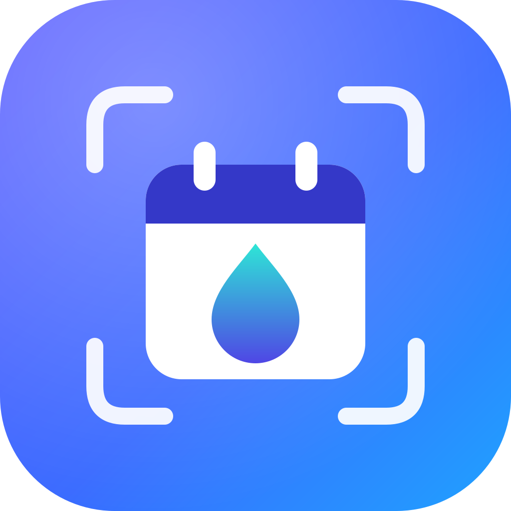

DropToCalPrivacy
For the DropToCal app for Android and the website droptocal.org. Last updated 4 October 2026.
In short: DropToCal has no accounts, no analytics and no ads. To find the events in a photo, PDF, text or link, it asks an AI model — either DropToCal's free one, which runs on Cloudflare Workers AI, or a provider you set up yourself with your own key. The content is read, the events come back to your device, and nothing you read is kept, by us or by Cloudflare. To share the free model fairly, we count how often each installation uses it, under a random number that does not identify you.
Who is responsible
DropToCal is a free, open-source app made by an individual:
Sebastian Brünecke
Email: hello@droptocal.org
The source code is public at github.com/droptocal/droptocal, so everything below can be checked.
What happens to what you read
To find the events in a poster, a PDF, a text or a web page, DropToCal asks an AI model. In Settings, under Provider, you choose which.
- What is sent: the content you chose to read — a photo, the pages of a PDF (as text, or as images if it has no text), a text, or the text of a web page — together with instructions for the model. Nothing else from your device is sent.
- Photos are scaled down and re-encoded before they are sent, which also removes their metadata, such as where a photo was taken.
DropToCal free (the default)
- Where it goes: to
api.droptocal.org, a small program of ours running on Cloudflare, which passes it to an AI model on Cloudflare Workers AI and returns the answer. The content is held only while it is being read. - Not kept, not used for training: we do not store or log what you read. Cloudflare states that it does not use content sent to Workers AI to train models or improve its services, and does not store it unless the program asks it to — ours does not.
- What is counted: the free model is shared by everyone and has a daily limit, so the app creates a random installation number when you first use it, and our server keeps, for each installation, how many reads it made today, and a session (the random number, a random key and its expiry) for up to a week. It also counts reads per network, under a one-way hash of the IP address rather than the address itself. Counts are deleted the next day. None of this is linked to who you are or to what you read.
- Technical logs: for each read our server logs how long it took and how much of the free allowance it used — never the content, your IP address or your installation number. These logs are deleted after three days.
- Checking it is really DropToCal: on the website, Cloudflare Turnstile checks once per session, usually invisibly, that a person and not a script is using the page; Cloudflare processes technical signals from your browser for this, under its Turnstile privacy terms. In the app as installed from Google Play, the app may ask Google Play Integrity to confirm that it is the genuine app on a genuine device; Google processes information about the app and device for this, and we receive only its verdict.
Your own provider
- In Settings you can instead enter the address of an AI provider (for example OpenAI, Anthropic, OpenRouter, Groq or Mistral, or any compatible service), your own API key and a model.
- Where it goes: then directly from your device to that provider. It does not pass through any server of ours, and nothing is counted.
- What the provider does with it is governed by your agreement with that provider and its privacy policy. Please read it before you use a provider; some offer settings that keep your requests from being stored or used for training.
Links
- In the app, a link you share or paste is fetched by your phone itself, like a browser would; only the page's text is then sent to the AI model, and only its first part for a long page in the free mode.
- On the website, a browser may not fetch other sites, so links are not read unless you choose a reader in Settings. If you choose Jina Reader, the link is sent to Jina AI, which fetches the page and returns its text; Jina AI's privacy policy applies to that. If you choose a reader of your own, the link goes to the address you entered.
What stays on your device
| What | Where |
|---|---|
| Your settings: provider address, models, link reader | On your device (in the app's storage, or in your browser's local storage on the website). |
| The random installation number and the free model's session key | On your device, so the daily count follows the installation. They identify no one. |
| Your API key and any reader key | In the app: encrypted with a key held by Android's keystore. On the website: in your browser's local storage. It is only ever sent to the service it belongs to. |
| What the app has learned about your provider (which request options it accepts) | On your device, to make the next request work at the first attempt. |
| The events found, and what you shared or pasted | Only in memory while you use them. Not saved, and gone when the app closes. |
Clear in Settings removes your settings and keys. Uninstalling the app, clearing its data, or clearing the site's data in your browser removes everything.
Camera, clipboard and calendar
- Camera: used only while the viewfinder is open. Photos taken in DropToCal are read and then discarded; they are not saved to your gallery.
- Clipboard: in the app, read only when you tap Paste. On the website, once you have allowed your browser to let DropToCal read the clipboard, it shows a one-line preview of what you copied; that stays on your device until you tap it.
- Calendar: DropToCal does not read your calendar and has no permission to. When you add an event, it hands the event to your calendar app (or as a calendar file), and you save it there.
- DropToCal does not use your location, your contacts or any other personal data on your phone.
Services involved in running DropToCal
- Cloudflare (Cloudflare, Inc.) runs the free AI model (Workers AI) and our small server for it, provides Turnstile on the website, provides the domain names, redirects droptocal.com to droptocal.org, and forwards email sent to hello@droptocal.org; see Cloudflare's privacy policy. As above, it does not keep or train on what you read.
- GitHub (GitHub, Inc.) hosts the website droptocal.org. Like any web host it processes your IP address and technical request data to deliver the page; see GitHub's privacy statement.
- Google Play, if you install the app from there, processes data about your installation under Google's privacy policy, including for Play Integrity as described above.
No tracking
DropToCal contains no analytics, no crash reporting, no advertising and no tracking of any kind, and the website sets no cookies of its own. The counts above exist only to share the free model fairly. We do not know who uses DropToCal or what they read with it.
Children
DropToCal is not directed at children, and it collects no data from anyone.
Your rights
We hold nothing that identifies you: the counts are kept under a random number and a hash, and are gone within a day (sessions within a week), so in practice there is nothing for us to show, correct or delete. Removing the app's data, or Clear in Settings, gives your installation a new random number. Data you sent to your own AI provider or a link reader is held by that service; ask them. You can also complain to the data protection authority where you live. For any question, write to hello@droptocal.org.
Changes
If DropToCal starts handling data differently, this page will say so before that happens, with a new date at the top. The previous version said that nothing passed through a server of ours; that changed on 4 October 2026 with the free model, described above.